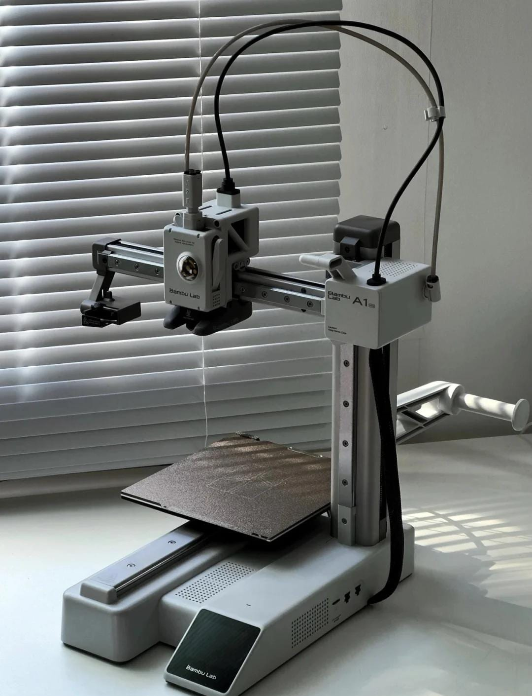

拓竹 A1 mini 3D 打印机

拓竹入门级 FDM 3D 打印机，继承旗舰机型的高速与静音特性，开箱即用、自动调平校准简单，可加装 AMS lite 实现多色打印，是桌面制造入门的口碑之作，适合新手与家庭玩家轻松上手。
客观评测
A1 mini 为 FDM 桌面 3D 打印机，成型尺寸 180×180×180mm，标称最高打印速度约 500mm/s，支持 0.1-0.3mm 层高，热端最高约 300℃、热床约 80℃。实测自动调平与校准流程全自动，首次打印成功率高，高速打印下模型表面质量稳定，运行噪音控制出色。可选配 AMS lite 实现四色自动换料，Bambu Studio 切片软件生态成熟。
主观点评
它让 3D 打印第一次变成「下单后等着收货」的体验：到货、开箱、跟着引导点几下，第一件作品就出来了。打印时安静得可以放在书桌旁，速度也快得让人上瘾，看着模型一层层长出来很治愈。加上 AMS 后打多色小玩具，孩子的快乐直接拉满。尺寸是硬伤，但对入门玩家来说，它几乎没有劝退环节。
优点与不足
- 开箱体验极佳，自动调平几乎零门槛
- 高速打印且运行安静，适合桌面使用
- AMS lite 多色打印玩法丰富
- 成型尺寸 180mm 立方，大件需拆件打印
- 开放式结构打印 ABS 等材料受限
- 配件与线材生态绑定官方体系较多
参数规格
| 类型 | FDM 熔融沉积 3D 打印机 |
|---|---|
| 成型尺寸 | 180 × 180 × 180 mm |
| 打印速度 | 最高约 500mm/s（厂商标称），常用 250-350mm/s |
| 精度 | 层高 0.1-0.3mm，标配 0.4mm 喷嘴 |
| 喷嘴/热床 | 热端最高约 300℃，热床最高约 80℃ |
| 耗材 | PLA、PETG、TPU 等 1.75mm 线材 |
| 调平 | 全自动调平与振动补偿，开箱即打 |
| 多色 | 可加装 AMS lite 实现四色自动换料 |
| 连接 | Wi-Fi、Bambu Studio/Bambu Handy 切片与监控 |
| 噪音 | 全封闭静音设计，实测运行安静 |